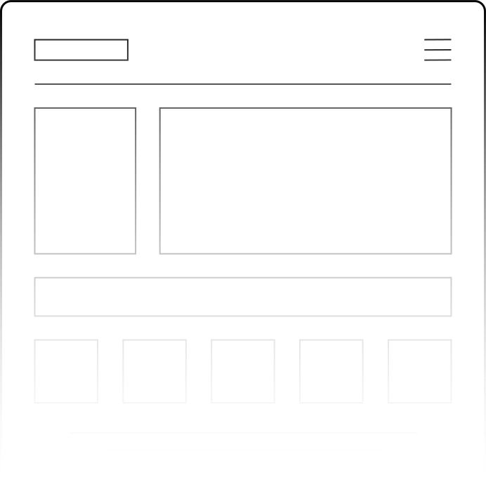

Vítá vás
Webmajstr
!
Webmajstr je webová miniaplikace, která vám pomůže pochopit základy webového vývoje. Představí vám jak web funguje, fundamentální koncepty kódování, tipy a triky a nakonec vám nabídne i kvíz, kde si budete moci vyzkoušet své nově dobyté znalosti.

JDEME NA TO!